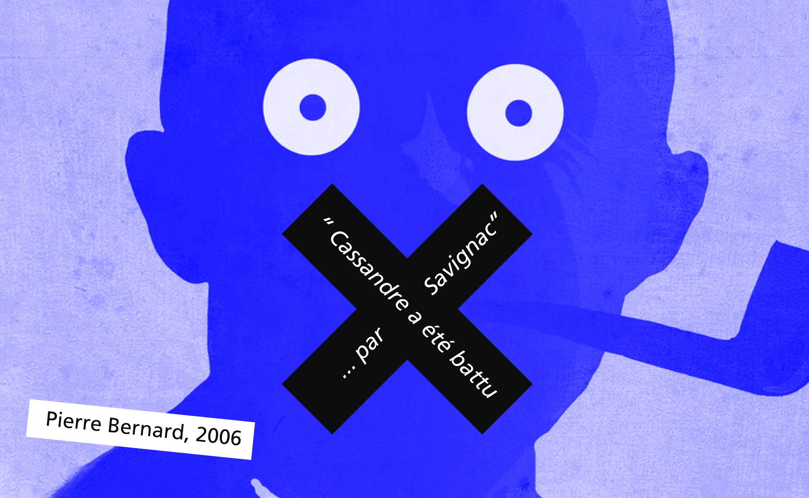
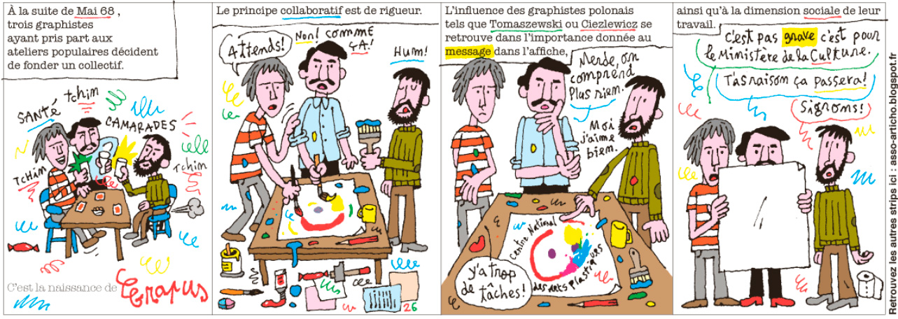
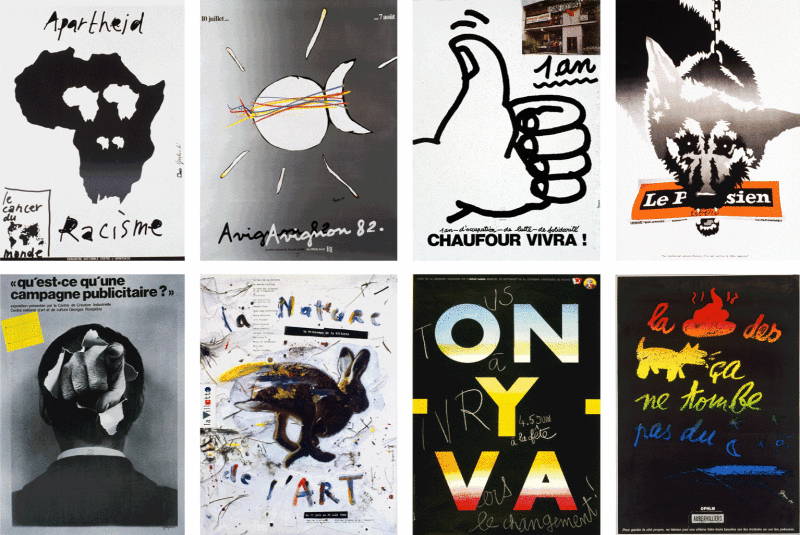

1970 – 1980
From social to the advertising country
In the 1970s, advertising was king. Pierre Bernard summarizes well the history of this supremacy in the interview with Forme-Vive: The Anglo-Saxon countries have had a much more harmonious evolution, much slower with graphics. It is much more deeply embedded in their societies than it is in ours. On our side, advertising became advertising through Savignac's work essentially - who was a leader and a very funny guy, a kind of genius a little anarchist as we like them here in France. For me he put a stop to the development of graphics." Cassandre was beaten by Savignac" and I think it's a shame: it made us take a considerable delay."

Bernard and his friends are committed to counter-current against the "sweet poison of advertising" by proposing posters in areas where the budget is scarce. Associations, cultural, social, communist commitment... Grapus defends small voices. At the same time, the three friends taught at Arts Deco. They come up against minimalist, strict and straight Swiss graphics, in the service of rules and Queen Advertising.
In opposition to this style and more generally to the pre-established rules, Grapus is committed to serving a cause which is dear to him, with this artistic desire of "gratuitous and impulsive act", which is opposed to a paid graphics, serving advertising. Art versus graphics. The impulse against the rules. Social causes versus lucrative causes. The style of the collective resides in a united collaboration of the 3 and soon 10 members, intellectuals with childlike traits and a playful aspect. The texts are almost always written by hand, the trembling drawings resemble children's drawings, offering an overall tone that almost denotes and swears with the photography used then in advertising, and of course with the Swiss movement. The artists play with textures, words, colours.
Once again, the Libération comic book sums up the creative and collaborative climate well.

Anti swiss graphic design
In an interview published by Téléréma, Pierre Bernard tells us the Grapus positioning, the opposite of Swiss graphics.
« In 1970, when we started teaching, we wanted to talk about everything, because we were carried by this energy of knowledge of images, of construction, of deconstruction. The Swiss don't talk about anything. Jean Widmer, I had him as a teacher, and he was a good teacher. But Widmer, working with him was.... a few moves. Absolute silence and, simply, it took your gaze on the form where it was needed, but without a word. Or such banal words. The subjects were also banal. Advertising. So that was the breaking point between his teaching and us, Grapus. We said: there is not only the product in life, we can talk about theatre, cinema, emotions... And there, at Arts Deco, between the Swiss and us, it was a little tense. With Widmer, we learned a skill, and it was an excellent thing. It's crafts and we don't discuss the rules. While at Grapus, all we enjoyed was discussing the rules to see if they were valid. To see if they were serving a class interest that wasn't ours. »
